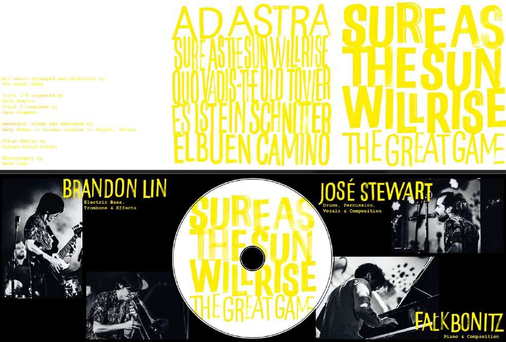

Sure As The Sun Will Rise
Nominated for the GIMMA Awards Taiwan 2026
Falk Bonitz’s second trio album and The Great Game’s debut is a long-form record shaped by contrast: beauty and struggle, darkness and release, written form and open improvisation. At its heart is a promise that after winter, the sun will rise again.
- Ad Astra
- Sure As The Sun Will Rise
- Quo Vadis
- Es Ist Ein Schnitter
- El Buen Camino
Distributed by Feeling Good Music Co in Taiwan, China and Japan. Streaming on Spotify, Apple Music, Amazon Music and other platforms.